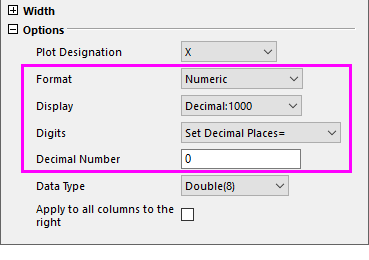

FAQ-1217 Wie importiere ich große ganze Zahlen und zeige sie nicht in wissenschaftlicher Notation an?
Import-Large-Integer-not-in-Scientific-Notation
Letztes Update: 22.04.2025
Es gibt zwei Möglichkeiten, große ganze Zahlen zu importieren und sie mit allen Stellen anzuzeigen.
Große ganze Zahl als Text importieren
Standardmäßig werden ganzen Zahlen, wenn sie mehr als 15 Stellen haben, z. B. ID-Nummern etc, als Text importiert und nicht in wissenschaftlicher Notation, wie z. B. 1E15 etc., umgewandelt. Im Gegensatz dazu werden ganze Zahlen mit weniger als 15 Stellen als numerische Zahlen importiert und daher bei der Anzeige in wissenschaftlicher Notation gekürzt.
Hinweis:
- Die Systemvariable @BID bestimmt die Schwellenwertstellen, über die heinaus die große ganze Zahl als Text importiert wird. Ihr Standardwert beträgt 15. Wenn Sie alle Stellen von großen ganzen Zahlen mit weniger als 15 Stellen anzeigen möchten, z. B. "35928471539682", dann müssen Sie @BID auf einen kleineren Wert setzen, z. B. 13.
|
Große ganze Zahl als Numerisch importieren
Seit Origin 2025b können Sie für große ganze Zahlen, die nicht mehr als 11 Stellen haben, sämtliche Stellen anzeigen, indem Sie Dezimalstellen auf 0 setzen. Das heißt:
- Klicken Sie doppelt auf die Spaltenüberschrift, um den Dialog Spalteneigenschaften zu öffnen.
- Unter der Gruppe Optionen legen Sie Folgendes fest:
- Format = Numericch oder Text & Numerisch
- Stellen = Dezimalstellen festlegen
- Dezimalzahl = 0

Hinweis:
- Wenn die Dezimalstellen festgelegt sind, bestimmt die Systemvariable @BIT den Schwellenwert, bei dessen Überschreitung die ganze Zahl in wissenschaftlicher Notation angezeigt wird. Der Standardwert beträgt 1E10. Wenn Sie ganze Zahlen importieren, die größer sind als 1E10, und sie als numerisch mit vollständig angezeigten Stellen importieren möchten, setzen Sie @BID auf einen größeren Wert, z. B. 1E20.
|
Schlüsselwörter:Big Data, große Zahlen, importieren, kopieren, einfügen, aus Excel kopieren, Zwischenablage, alle Stellen, Dezimal, wissenschaftliche Notation, Standardformat